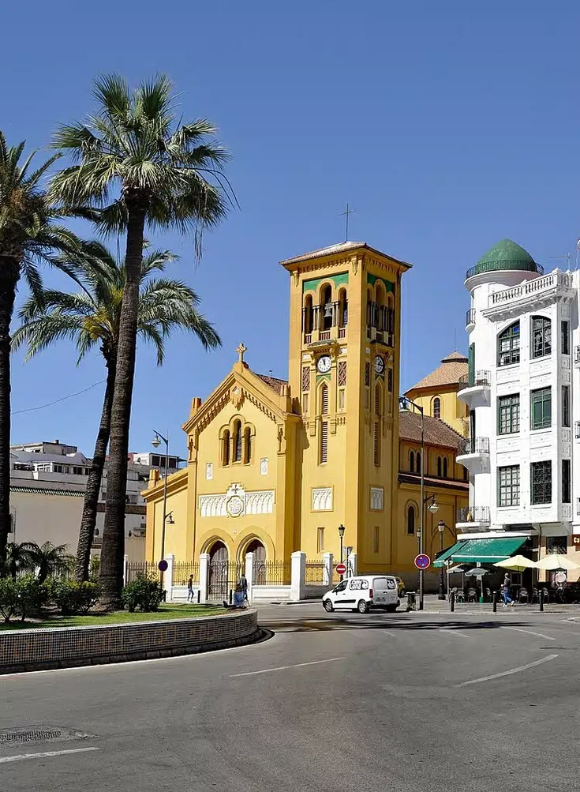
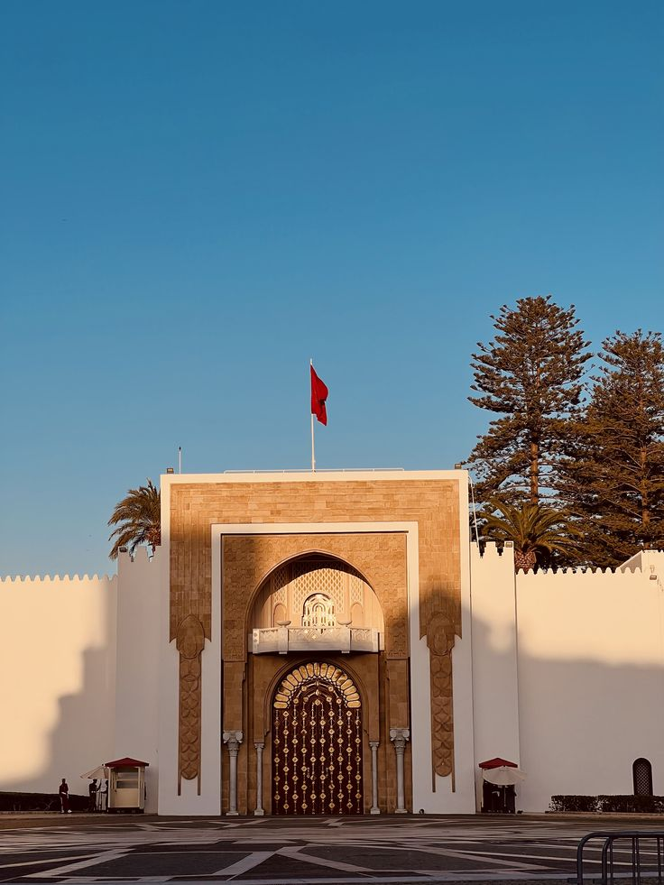
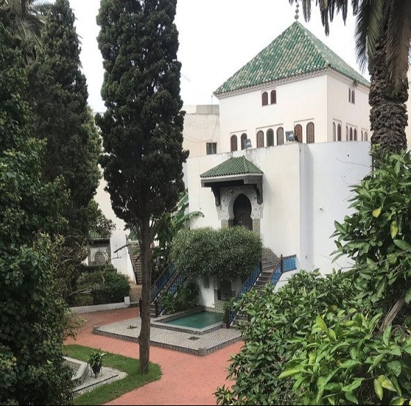

Lieux Incontournables
Explorez les merveilles emblématiques de Tetouan.

La Médina (UNESCO)
Entourée de cinq kilomètres de remparts percés de sept portes historiques, la médina de Tetouan est un labyrinthe préservé. Ses ruelles ombragées, ses zelliges colorés et ses maisons blanchies à la chaux rappellent l'architecture de l'Andalousie dont les réfugiés ont rebâti la ville au XVe siècle.
Localiser
L'Ensanche (Quartier espagnol)
Construit sous le protectorat, ce quartier tranche avec la médina par ses larges avenues et son architecture coloniale majestueuse (Art déco et néo-mauresque). La Plaza Primo de Rivera (Place Moulay El Mehdi) en est le cœur battant.
Localiser
Place Hassan II & Palais Royal
Cette vaste place majestueuse relie l'ancienne médina au quartier moderne de l'Ensanche. Elle est dominée par le Palais Royal (Dar El Makhzen), ancienne résidence du Khalifa brillamment restaurée, entourée de colonnes et de lampadaires modernistes.
Localiser
Dar Sanaa (École des Arts)
L'École des Arts et Métiers Nationaux de Tetouan est un joyau. Créée en 1919, c'est un conservatoire vivant de l'artisanat andalou-marocain. On y admire les maîtres artisans enseigner la menuiserie peinte, le travail du cuir, la poterie et la confection de zelliges.
Localiser